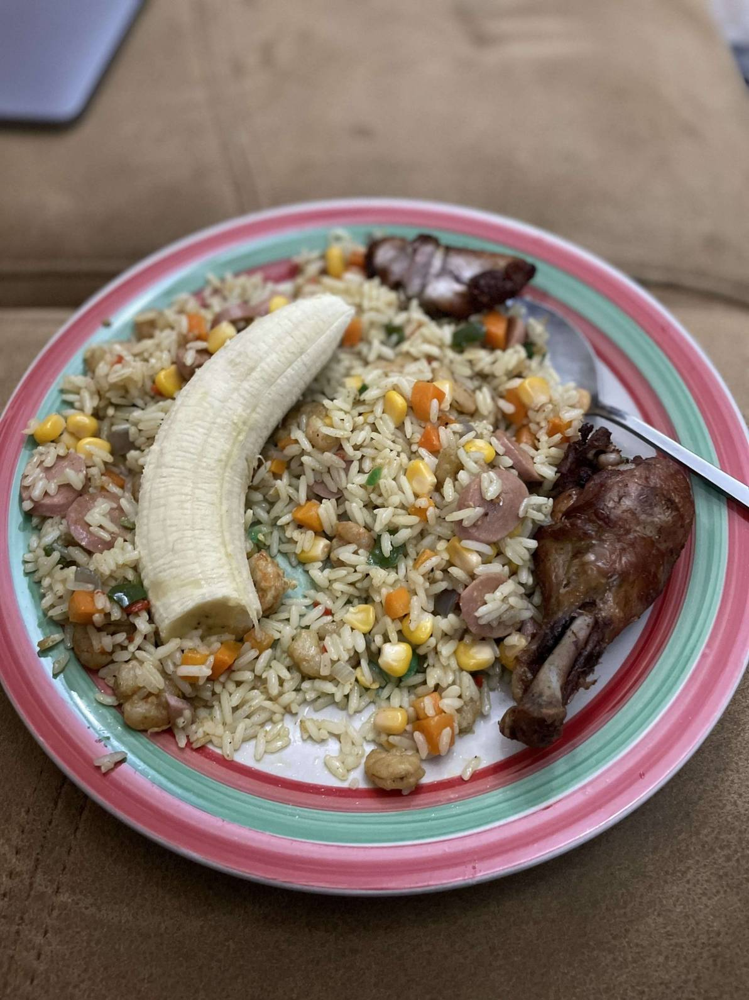

Friedrice

Description
This is a very simple yet delicious recipe. This version relies on a ton of fresh vegetables, diced sausages, shrimps and a little bit of oil for crisping it up.
Ingredients
- 2 cups cooked rice
- 1/2 cup chicken stock
- 3 tbsp oil for frying
- 1 cup diced onion
- 1 cup mixed vegetables carrots, sweet peas, sweet corn and green beans
- 1/2 tsp thyme
- 1 tsp curry powder
- 2 scallions diced
- 1 chicken stock cube
- 1 cup sausages diced
- 1 cup small sized shrimps
- salt to taste
- 1/4 tsp cayenne pepper
Steps
- Add the boiled rice to the stock in a medium pot and cook on medium heat until the water is dried up
- Preheat the oil in a pan on medium to high heat, throw in the onions, and fry for a minute or two; add the scallions, mixed vegetables, thyme, curry powder, salt, and stock Cube.
- Throw in the sausages, shrimps and rice — Stir-fry for about 3 to 5 minutes on high heat.
- Take it off the heat and serve.